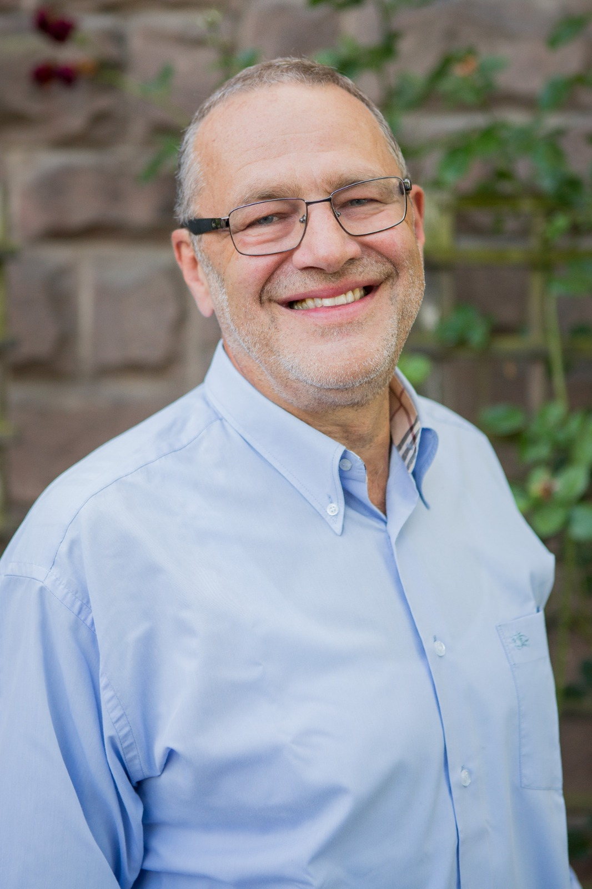
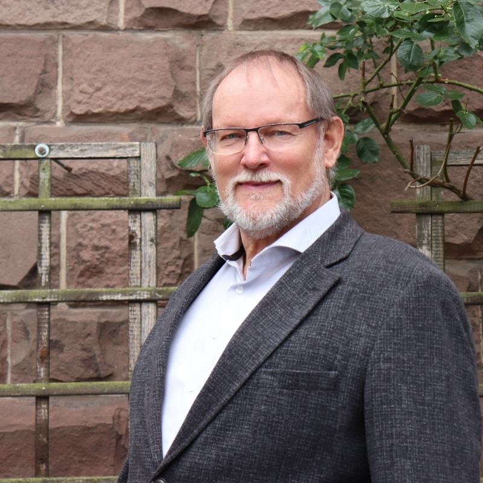
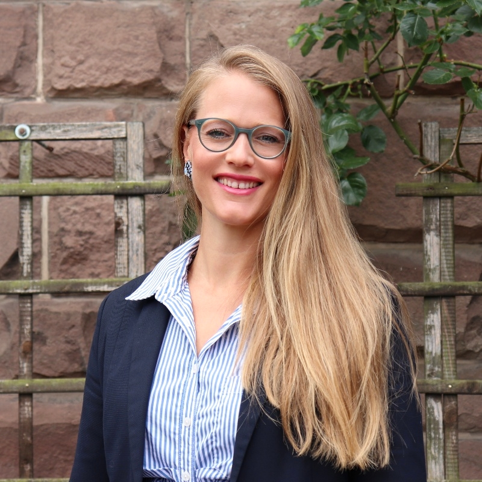
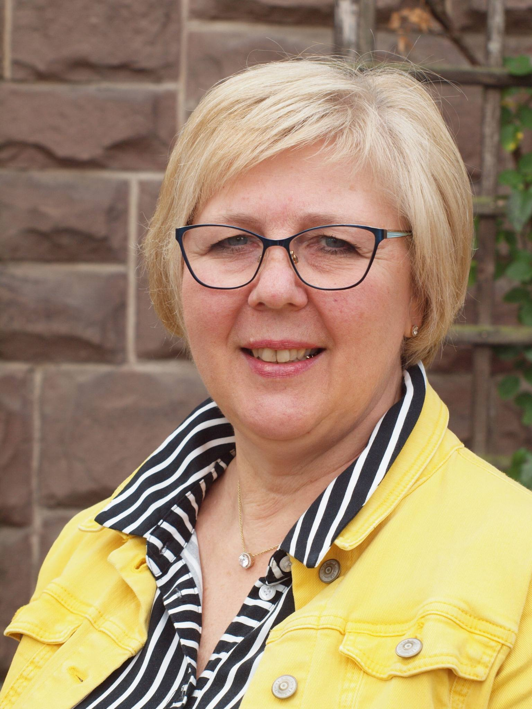
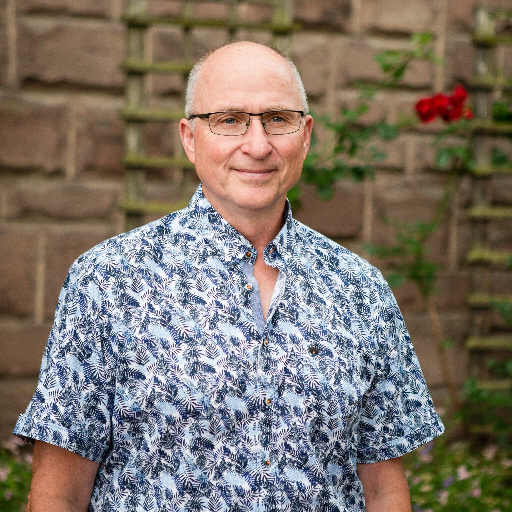
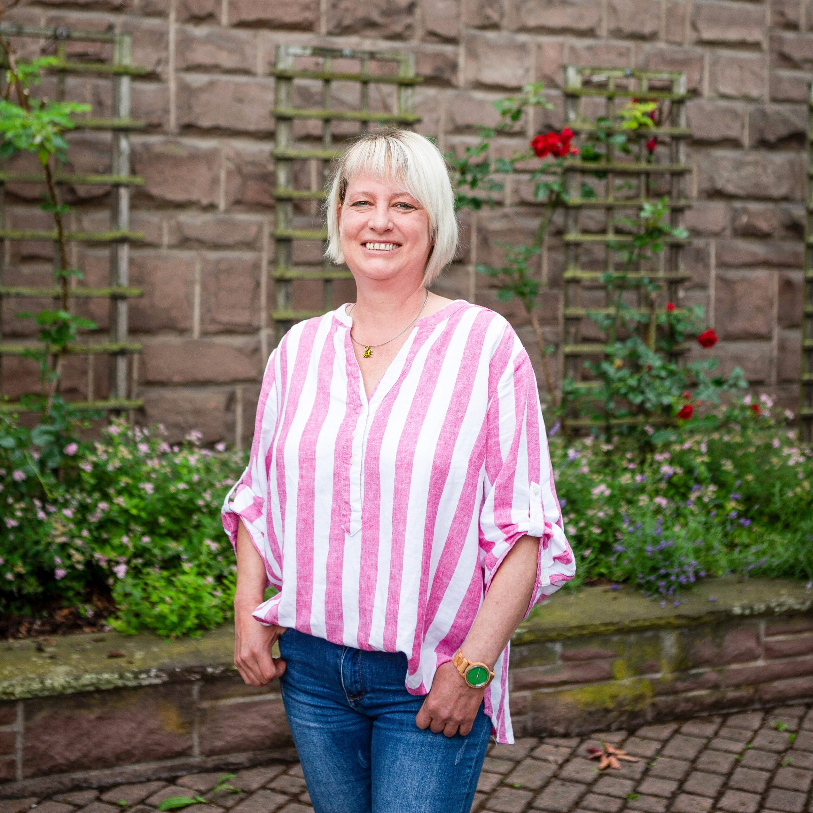
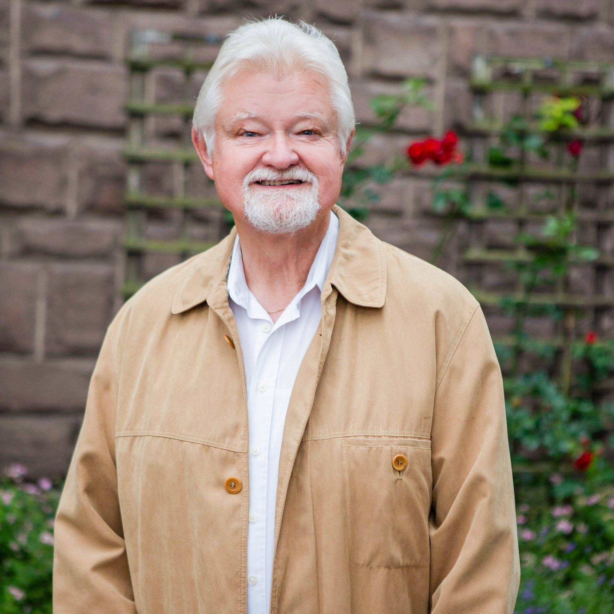
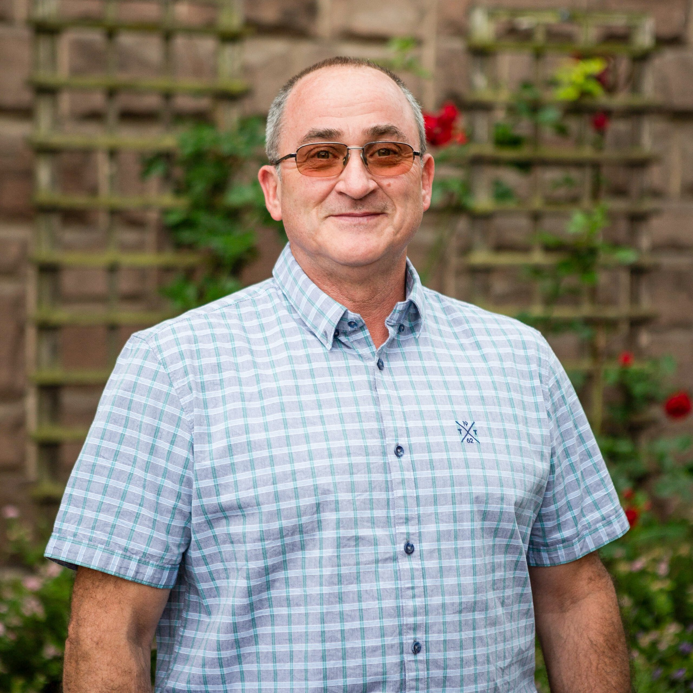

#kompetent. Was sonst!
Über Parteigrenzen hinweg bitten wir Sie, liebe Bürgerinnen und Bürger, um Ihre Stimme für eine lebenswerte Zukunft unserer Gemeinde und ihrer Ortsteile. Unabhängig von Parteiprogrammen gestalten wir — orientiert an den Bedürfnissen und Möglichkeiten der Menschen vor Ort — sachlich und bürgernah mit.
Ihre Kandidatinnen und Kandidaten der FBL Nörten-Hardenberg
In der Kommunalpolitik werden unmittelbare Entscheidungen für unsere Lebensverhältnisse vor Ort getroffen. Unabhängig von Parteiprogrammen wollen wir diese Entscheidungen sachlich und bürgernah — orientiert an den Bedürfnissen und Möglichkeiten der Ortsteile und unserer Gemeinde — mitgestalten.
Demokratische Diskussionen in den Räten und mit den Einwohnerinnen und Einwohnern sind uns wichtig. Einiges wurde in den letzten Jahren auch nach umfangreichen Diskussionen erreicht. Neuen Aufgaben wollen wir uns gemeinsam mit Ihnen stellen.
— Dr. Christian Eberl

Diplom-Forstwirt und langjähriger Kommunalpolitiker, derzeit Kreistagsabgeordneter und stellvertretender Landrat mit den Schwerpunkten Land- und Forstwirtschaft, Umwelt, Abfallwirtschaft, Raumordnung, Bauen und Verkehr. Mit seiner Berufs- und Politikerfahrung begleitet und unterstützt er insbesondere die jüngeren Kandidatinnen und Kandidaten für Gemeinde- und Ortsrat — damit die Politik für die Bürgerinnen und Bürger sowie künftige Generationen wieder nachhaltig und erfolgreich wird.

Hartmut Ehmen ist 65 Jahre alt, technischer Betriebsinspektor im Ruhestand und wohnhaft in Elvese. Er ist seit 2016 Mitglied des Gemeinderats Nörten-Hardenberg und Ortsbürgermeister von Elvese. Für ihn sind Klimaschutz, bezahlbares Wohnen und die Stabilität unserer Gemeinde zentrale Themen.

Das Wohl und die Zufriedenheit der Bürgerinnen und Bürger sind ihr sehr wichtig — insbesondere das Sicherheitsgefühl und ein harmonisches Miteinander. Für Kinder im Kindergarten-, Vorschul- und Schulalter setzt sie sich für altersgerechte Veranstaltungen und kreative Projekte ein.

Sie war von 2016 bis 2021 Ortsbürgermeisterin in Nörten-Hardenberg. Wichtig sind ihr Kindertagesstätten, Schulen, das Jugendzentrum, bezahlbare Wohnungen sowie die Seniorenbetreuung — und alles, was das Leben in Nörten-Hardenberg lebenswert macht.
Monica Eberl-Schneeberger setzt sich für die Attraktivität und Lebensqualität unseres Ortes ein. Den Weihnachtsmarkt, das Kreiselfest und die Vereine des Ortes unterstützt sie aktiv. Die Verbesserung der Ortsstraßen, der Kinderspielplätze und der gemeindlichen Einrichtungen liegt ihr besonders am Herzen.

Seit 2016 im Ortsrat. Sein besonderes Anliegen: Sicherheit für alle Bürgerinnen und Bürger. Sichere Schul- und Kita-Wege für Kinder sowie Schutz älterer Mitbürgerinnen und Mitbürger im Straßenverkehr — dafür steht er als Ansprechpartner zur Verfügung.

Carina Wunderlich ist selbstständige Ergotherapeutin aus Leidenschaft und kandidiert erstmals für den Ortsrat. Ihr Motto: „Es ist schnell geschimpft, aber ohne Einsatz eben nicht schnell gemacht!" Altersgerechtes Wohnen und Mehrgenerationeneinrichtungen liegen ihr sehr am Herzen.

Wolfgang Pischke engagiert sich für Ortsgestaltung, Vereinsleben und das aktive Miteinander der Bürgerinnen und Bürger. Er setzt sich für altersgerechten Wohnraum und betreutes Wohnen ein und fördert den Partnerschaftskreis Bondouflé weiter.

Ingo Tennstedt ist 58 Jahre alt, Fachkraft für Abwassertechnik und aktiv in der Freiwilligen Feuerwehr. Er ist seit 2016 Mitglied des Ortsrats Sudershausen und seit 2019 im Bauausschuss. Schwerpunkte: bezahlbarer Wohnraum, Feuerwehrgerätehaus-Neubau und umweltverträgliche Gewerbegebiete.
Bezahlbares Wohnen für örtliche Arbeitnehmer, Familien und Senioren — Mehrgenerationenwohnen und altersgerechte Einrichtungen aktiv fördern.
Schulstandorte und Kindertagesstätten erhalten und ausbauen. Sichere Schul- und Kita-Wege für alle Generationen gewährleisten.
Das Leinetal und die Leineinsel als Naherholungsgebiet für alle Generationen erhalten und vor Bebauung schützen.
Barrierefreier Bahnhof, Ausbau der Fahrradwege und sichere Schulwege — Mobilität für alle Bürgerinnen und Bürger verbessern.
Glasfaserausbau bis in jeden Haushalt — schnelles Internet für alle Bürgerinnen und Bürger als Grundlage für zukunftsweisendes Gewerbe.
Zukunftsweisendes und umweltverträgliches Gewerbe ansiedeln. Feuerwehrgerätehaus-Neubau im Rodetal realisieren.
Vereinsleben stärken, Ehrenamt anerkennen und das aktive Miteinander in unserer Gemeinde fördern und erhalten.
Haben Sie Fragen, Anregungen oder Vorschläge für unsere Gemeinde? Wir freuen uns über Ihre Nachricht. Gemeinsam gestalten wir ein lebens- und liebenswertes Nörten-Hardenberg.
✉ info@fbl-nh.de